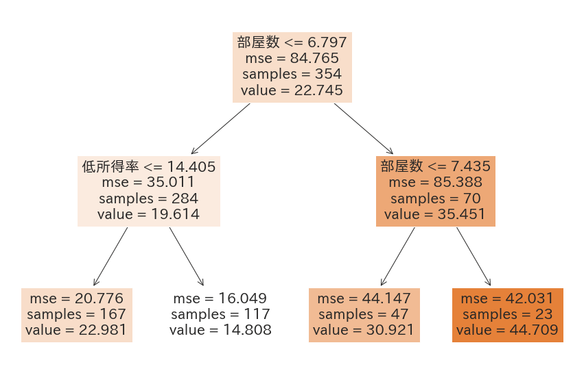
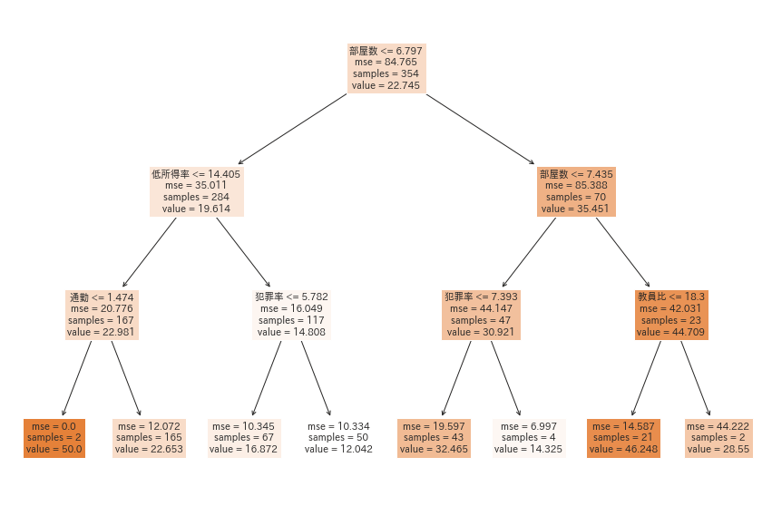
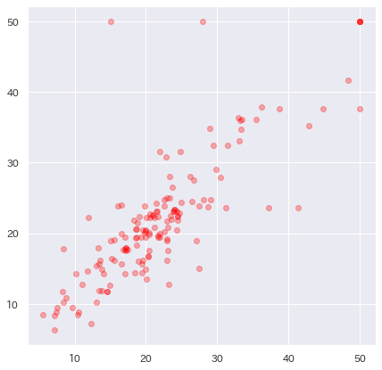
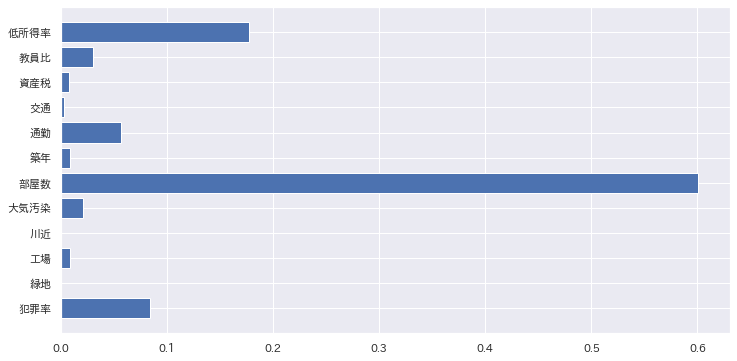
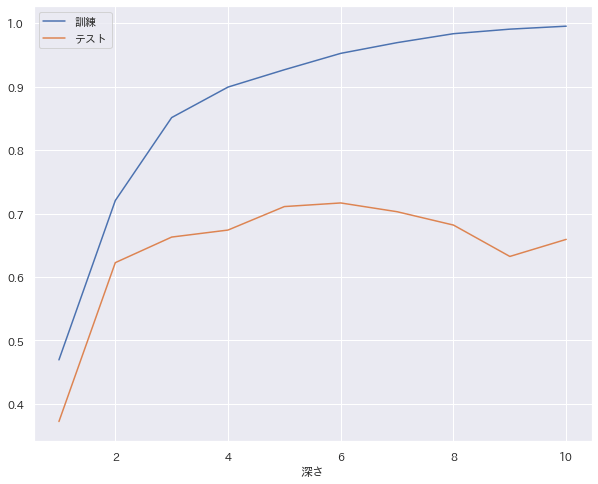

統計からAIへ#
単回帰と重回帰分析は、もともと統計学の分野で研究されてきた手法です。 統計学では、過去のデータを解釈することを重視します。 AIでは、過去のデータを解釈することより、 未来（未知のデータ）を正しく予測すること を重視します。
今回は、AIの流儀にしたがって、より正確に予測できるモデルを作る方法を見ていきます。
さて、今回もデータセットは、ボストン住宅価格データセットを使います。 演習が始まる前にデータセットをダウンロードして、必要なモジュールをインポートしておいてください。
もうボストン住宅価格データセットは飽きた方のために、 コースワーク２では、別のデータセットの練習を用意してあります。
未来を予測する#
機械学習やAIの開発では、過学習 という現象が非常に嫌われています。 これは、予測モデルが過去のデータである訓練データに過剰に適合し過ぎてしまって、 未来の新しいデータへの予測があまり正確にできなくなる現象です。
過学習
過去問ばかり繰り返し練習しても、本番の試験の問題は解けませんよね。
機械学習やAIでは、過去のデータではなく、 未来の未知のデータに対する予測モデルの開発が重要になります。 ホールドアウト法という未知のデータに対する汎化性能を評価する手法を紹介します。
重回帰分析#
まず、前回の回帰分析をを思い出しながら
'住宅価格'を目的変数、それ以外の１２次元のデータ列を説明変数とした重回帰モデルを作ってみます。
from sklearn.linear_model import LinearRegression
from sklearn.metrics import mean_squared_error, r2_score
X = df[df.columns[:-1]] # 価格以外を全て説明変数に
y = df['住宅価格']
model = LinearRegression()
model.fit(X, y)
y_pred = model.predict(X)
print('説明変数:', X.columns, '次元:', X.shape)
print("MSE: ", mean_squared_error(y, y_pred))
print('R2', r2_score(y, y_pred))
plt.figure(figsize=(7, 7))
plt.scatter(y, y_pred, c='red', alpha=0.3)
plt.show()
説明変数: Index(['犯罪率', '緑地', '工場', '川近', '大気汚染', '部屋数', '築年', '通勤',
'交通', '資産税', '教員比','低所得率'], dtype='object') 次元: (506, 12)
MSE: 22.429681439489933
R2 0.7343070437613075
決定係数(R2)をベースラインにしましょう。 ここから、過学習を防ぎながら、 決定係数が高い回帰モデルを作る方法をみていきたいと思います。
ホールドアウト法#
人工知能では、過去に学習したデータではなく、 未来の未知のデータ に対する予測精度が重要になります。
ホールドアウト法 は、 全データを訓練データとテストデータに分割することで、モデルの精度を評価する方法です。

テストデータを未知として学習に使わないことで、未知のデータに対する精度が測定できるようになります。
- 訓練データ: モデルを学習するためのデータ
- テストデータ: モデルを評価するためのデータ
sklearn には、
ランダムにデータを訓練データとテストデータに分割する関数train_test_split()があります。
この関数を使って、訓練データとテストデータを分割します。
訓練データとテストデータに分割
test_size: 訓練用(70%),テスト用(30%)random_state=0: 乱数の生成を固定し、毎回同じ乱数で分割させる
from sklearn.model_selection import train_test_split
X_train, X_test, y_train, y_test = train_test_split(X, y, test_size=0.3, random_state=0)
print('訓練データ数:', len(X_train))
print('テストデータ数:', len(X_test))
訓練データと学習#
学習は、訓練データに対してのみ行います。 テストデータで学習することは、 機械学習ではカンニング（チート）行為になります。
テストデータと評価#
テストデータ X_testとy_testは、モデルの学習には一切使われていません。
だから、学習済みモデルにとって、未知の未来に来るかもしれないデータに相当します。
モデルの評価は、このようなテストデータを用いて行います。
X_test: テストデータの説明変数y_test: テストデータの目的変数（つまり、正解）y_pred:: モデルから予測されたデータ列
y_pred = model.predict(X_test)
print("MSE(テスト): ", mean_squared_error(y_test, y_pred) )
print('R2(テスト):', r2_score(y_test, y_pred))
MSE(テスト)やR2(テスト)は、学習していない未知データに対する精度になります。 このような未知のデータへの指標を汎化性能といいます。
過学習のチェック#
過学習は、訓練データを過度に学習してしまう現象です。 こちらは、少しややこしいですが、訓練データの精度と比較してみることで確認します。
print('R2(訓練):', r2_score(y_train, model.predict(X_train)))
print('R2(テスト):', r2_score(y_test, y_pred))
訓練データのスコアが、テストデータに比べて明らかに高いときは、過学習を疑いましょう。 ちなみに、今回、作成した重回帰モデルでは、明らかに訓練データのスコアの方が高いです。 そのため、過学習を疑うべき事案となります。
過学習の防ぎ方
過学習は、学習があまり進まないようにパラメータを調整することで防ぎます。 機械学習のアルゴリズムによって、防ぎ方は異なります。
交差検証⭐️#
交差検証（クロスバリデーション, CV)は、訓練データとテストデータに分割する点は同じです。
データをまずK個に分割して、そのうちひとつだけををテストデータ、残りを訓練データとして、 学習・評価します。２回目は、テストデータを切り替えてk回評価します。 そして、各回で測定したスコアの平均でモデルの評価をする方法です。

sklearn では、cross_val_scoreとして関数が用意されています。
これはすごく便利な関数で、必要なパラメータを渡せば、あとは勝手に計算してくれます。
ひとつ注意する点は、データをそのままk等分してしまう点です。 データに偏りがあると、期待した結果にならないことがあります。 何か変だなと思ったら、事前にランダム化しておきましょう。
from sklearn.model_selection import cross_validate, cross_val_score
df = df.sample(500) #500個ほどサンプリング
X = df[df.columns[:-1]] # 価格以外を全て説明変数に
y = df['住宅価格']
scores = cross_val_score(LinearRegression(), X, y, cv=5, scoring='r2')
print(scores)
cross_val_score()の結果は、5回分のスコアで帰ってきます。
この平均を計算すればよいのですが、boxplot などを表示しても面白いです。
詳しくは、演習問題を参考にしてください。
決定木#
今まで、データサイエンスと機械学習の基礎中として、線形回帰（単回帰と重回帰）を紹介しました。 しかし、機械学習アルゴリズムは長足の進歩を遂げているので、 精度のよい回帰モデルを作成したいのなら、線形回帰にこだわる必要はありません。
現在、データサイエンスの業務の場で人気が高いのは、 ランダムフォレスト、XGDBoost、サポートベクターマシンがよく使われています。 一方、AIでは、ニューラルネットワーク系のアルゴリズムが使われています。
ここでは、もうひとつの定番の回帰分析である、決定木 を紹介したいと思います。
決定木のしくみ#
決定木は、ランダムフォレストやXGDBoost の元になっている基本的なアルゴリズムです。 非線形回帰アルゴリズムなので、線形モデルがうまく当てはまらないときの有効な候補になります。


決定木の利用法#
決定木は、sklearn.tree.DecisionTreeRegressorを使います。
あとは、LinearRegression() の代わりに、
DecisionTreeRegressor()を使えば、fit()やpredict()などのメソッドは
全く同じように使うことができます。
model = DecisionTreeRegressor()
model.fit(X_train, y_train)
y_pred = model.predict(X_test)
print('R2(訓練):', r2_score(y_train, model.predict(X_train)))
print('R2(テスト):', r2_score(y_test, y_pred))
plt.figure(figsize=(7, 7))
plt.scatter(y, y_pred, c='red', alpha=0.3)
plt.show()

訓練データは、素晴らしいスコアを出しましたが、過学習ですね。たぶん。
ちなみに決定木を表示するときは、次のようにplot_treeを使います。
from sklearn.tree import plot_tree
plot_tree(model, feature_names=X.columns, filled=True)
plt.show()
maxdepth
上の図は、DecisionTreeRegressor(maxdepth=2)で学習したときです。
何も指定しないと無制限に木を分割していきます。
重要度#
決定木の面白いところは、どの説明変数がモデルに寄与しているか簡単に 可視化できる点です。
重要度(importance)
特徴量の分割がターゲットの分類にどれくらい寄与しているかを測る指標
決定木モデルの学習が終わると、feature_importances_に
各説明変数ごとの重要度が算出されて記録されています。
for column, importance in zip(X_train.columns, model.feature_importances_):
print(f'{column} {importance:.5f}')
print(sum(model.feature_importances_))
犯罪率 0.08447
緑地 0.00049
工場 0.00882
川近 0.00026
大気汚染 0.02107
部屋数 0.60087
築年 0.00893
通勤 0.05647
交通 0.00276
資産税 0.00792
教員比 0.03026
低所得率 0.17767
1.0
Warning
重要度は、合計が1.0になるように正規化されています。
棒グラフに表示してみると、より視覚的に確認しやすいでしょう。

木の深さを調整する⭐️#
決定木は、maxdepthというパラメータを調整することで、
学習を進める深さを調整できます。
ハイパーパラメータ
データサイエンティストやAIエンジニアがモデルを作成する前に設定すべきパラメータのこと
ハイパーパラメータの調整がデータサイエンティストやAIエンジニアの腕の見せ所です。 もちろん、手作業で調整するよりは、簡単なプログラムを組んで調べるようにします。
y = []
y2 = []
for depth in range(1, 11):
model = DecisionTreeRegressor(max_depth=depth) # None 制限なし
model.fit(X_train, y_train)
r2_train = r2_score(y_train, model.predict(X_train))
r2_test = r2_score(y_test, model.predict(X_test))
y.append(r2_train)
y2.append(r2_test)
print(f'depth={depth}, R2(train)={r2_train:.4f}, R2(test)={r2_test:.4f}')
plt.figure(figsize=(10, 8))
plt.plot(range(1,11), y, label='訓練')
plt.plot(range(1, 11), y2, label='テスト')
plt.xlabel('深さ')
plt.legend()
plt.show()
depth=1, R2(train)=0.4694, R2(test)=0.3723
depth=2, R2(train)=0.7204, R2(test)=0.6226
depth=3, R2(train)=0.8511, R2(test)=0.6629
depth=4, R2(train)=0.8992, R2(test)=0.6739
depth=5, R2(train)=0.9265, R2(test)=0.7109
depth=6, R2(train)=0.9523, R2(test)=0.7166
depth=7, R2(train)=0.9692, R2(test)=0.7028
depth=8, R2(train)=0.9833, R2(test)=0.6818
depth=9, R2(train)=0.9904, R2(test)=0.6324
depth=10, R2(train)=0.9951, R2(test)=0.6593

ハイパーパラメータの調整
ところで、上のようなプログラムがすらすらとかけると、Python力は実務レベルです。 ただし、何事にも便利なライブラリが用意されています。グリッドサーチを調べてください。
どのあたりから過学習と判断するか難しいところです。 「ひとつの基準としてテストデータのスコアが上がらなくなったら学習を止める」 という考え方があります。 AIの目的によっても、過学習の判断基準は変わってきます。
練習問題⭐️⭐️#
コースワーク
今週は、コースワーク２があります。 まずは、そちらを優先して、取り組んでください。
sklearnには、回帰モデルを28種類あります。 それらを全部試して、精度を比較してしてみてみましょう。
from sklearn.linear_model import LinearRegression, Ridge, Lasso, ElasticNet, SGDRegressor
from sklearn.linear_model import PassiveAggressiveRegressor, ARDRegression, RidgeCV
from sklearn.linear_model import TheilSenRegressor, RANSACRegressor, HuberRegressor
from sklearn.neural_network import MLPRegressor
from sklearn.svm import SVR, LinearSVR
from sklearn.neighbors import KNeighborsRegressor
from sklearn.gaussian_process import GaussianProcessRegressor
from sklearn.tree import DecisionTreeRegressor
from sklearn.experimental import enable_hist_gradient_boosting
from sklearn.ensemble import RandomForestRegressor, AdaBoostRegressor, ExtraTreesRegressor, HistGradientBoostingRegressor
from sklearn.ensemble import BaggingRegressor, GradientBoostingRegressor, VotingRegressor, StackingRegressor
from sklearn.preprocessing import PolynomialFeatures
from sklearn.pipeline import Pipeline
from sklearn.cross_decomposition import PLSRegression
reg_dict = {
"LinearRegression": LinearRegression(),
"Ridge": Ridge(),
"Lasso": Lasso(),
"ElasticNet": ElasticNet(),
"Polynomial_deg2": Pipeline([('poly', PolynomialFeatures(degree=2)),('linear', LinearRegression())]),
"Polynomial_deg3": Pipeline([('poly', PolynomialFeatures(degree=3)),('linear', LinearRegression())]),
"Polynomial_deg4": Pipeline([('poly', PolynomialFeatures(degree=4)),('linear', LinearRegression())]),
"Polynomial_deg5": Pipeline([('poly', PolynomialFeatures(degree=5)),('linear', LinearRegression())]),
"KNeighborsRegressor": KNeighborsRegressor(n_neighbors=3),
"DecisionTreeRegressor": DecisionTreeRegressor(),
"RandomForestRegressor": RandomForestRegressor(),
"SVR": SVR(kernel='rbf', C=1e3, gamma=0.1, epsilon=0.1),
"GaussianProcessRegressor": GaussianProcessRegressor(),
"SGDRegressor": SGDRegressor(),
"MLPRegressor": MLPRegressor(hidden_layer_sizes=(10,10), max_iter=100, early_stopping=True, n_iter_no_change=5),
"ExtraTreesRegressor": ExtraTreesRegressor(n_estimators=100),
"PLSRegression": PLSRegression(n_components=10),
"PassiveAggressiveRegressor": PassiveAggressiveRegressor(max_iter=100, tol=1e-3),
"TheilSenRegressor": TheilSenRegressor(random_state=0),
"RANSACRegressor": RANSACRegressor(random_state=0),
"HistGradientBoostingRegressor": HistGradientBoostingRegressor(),
"AdaBoostRegressor": AdaBoostRegressor(random_state=0, n_estimators=100),
"BaggingRegressor": BaggingRegressor(base_estimator=SVR(), n_estimators=10),
"GradientBoostingRegressor": GradientBoostingRegressor(random_state=0),
"VotingRegressor": VotingRegressor([('lr', LinearRegression()), ('rf', RandomForestRegressor(n_estimators=10))]),
"StackingRegressor": StackingRegressor(estimators=[('lr', RidgeCV()), ('svr', LinearSVR())], final_estimator=RandomForestRegressor(n_estimators=10)),
"ARDRegression": ARDRegression(),
"HuberRegressor": HuberRegressor(),
}
どのような機械学習アルゴリズムがあるか調べてみよう
データサイエンティストになるには、最新アルゴリズムに関心をもち、 データセットにあわせて使い分けることも重要です。 研究室の学生をみていると、どんどん色々なアルゴリズムを試してきて、 報告してくれます。教員より詳しいです。